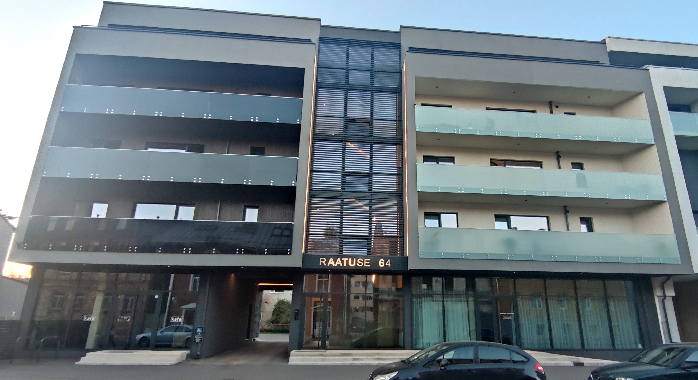
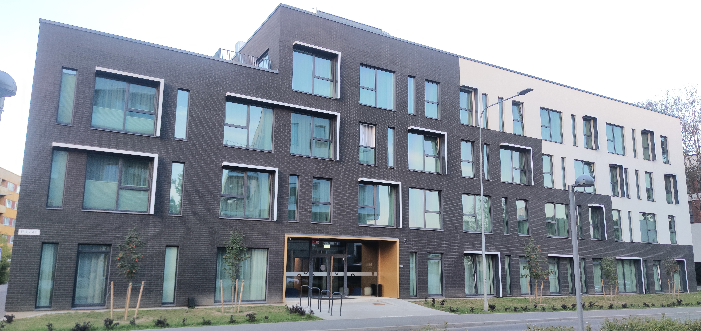
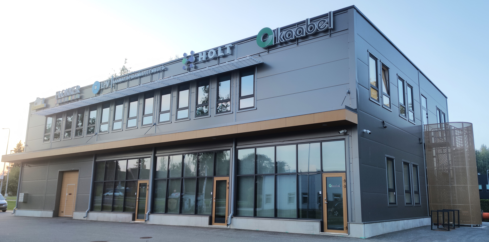
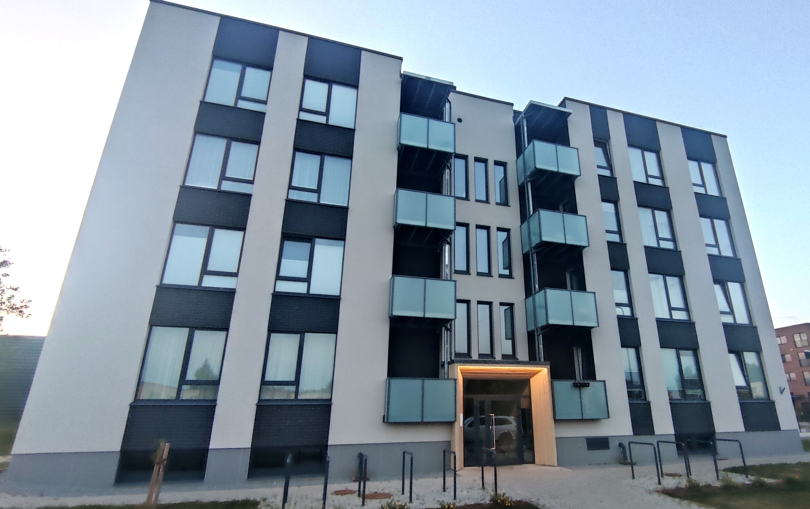
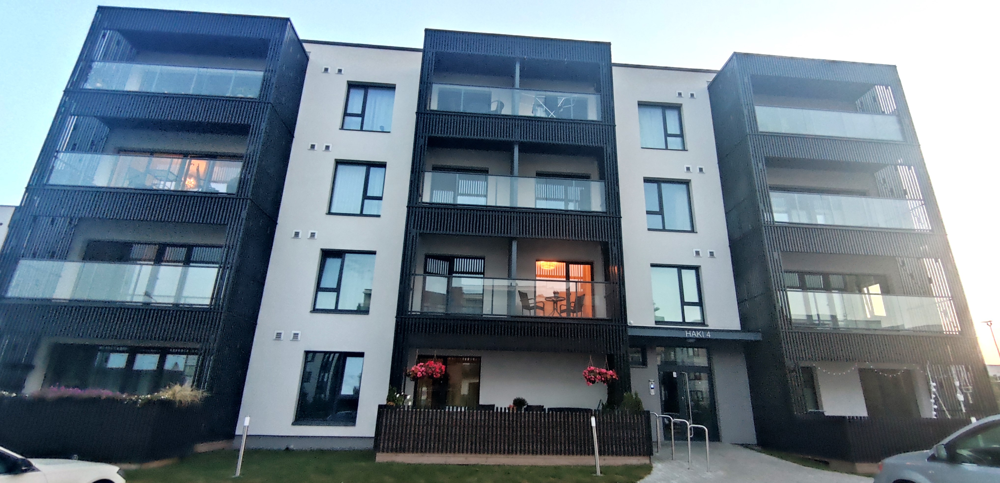

EhitusMõistus OÜ on spetsialiseerunud konstruktiivsete projektide koostamisele ja joonestusele. Meie töö keskendub kvaliteedile, usaldusväärsusele ja mõistlikule suhtumisele, mis tagavad klientidele alati parima tulemuse.
Teenindame nii eraisikuid kui ka ärikliente, pakkudes innovatiivseid ja personaalseid lahendusi vastavalt kliendi vajadustele. Meie kogemused ja pädevus tagavad professionaalse ja põhjaliku lähenemise igale projektile.
Olulisemad saavutused hõlmavad 8-aastase töökogemuse jooksul edukalt lõpetatud ärihoonete, korterelamute ning eramute projekte.
EhitusMõistus OÜ on Teie usaldusväärne partner konstruktsioonide projekteerimisel. Võtke ühendust ja leiame koos parima lahenduse!

Monoliitsetest raudbetoon seintest/postidest, armeeritud-monolitiseeritud õõnesbetoonplokk seintest, eelpingestatud raudbetoon õõnespaneelidest ja teraskonsoolidel rõdudega valminud korterelamu-ärihoone.
2023, ehitusalane pind 349,0 m², korruste arv 5

Raudbetoon seinaelementidest, monolitiseeritud raudbetoonpostidel, -riivtaladel, monoliitsetest raudbetoon seinte, armeeritud-monolitiseeritud õõnesbetoonplokk seintest ning eelpingestatud raudbetoon õõnespaneelidest rajatud majutushoone.
2023, ehitusalane pind 897,6 m², korruste arv 5

Raudbetoonpostide, -riivtalade, eelpingestatud raudbetoon õõnespaneelide elementidest, teras/puit välisseina tugielementidega ja terastõmbidega terasraamil varikatustega ehitatud lao- ja büroohoone.
2022, ehitusalane pind 486,4 m², korruste arv 2

Monoliitsetest raudbetoon seintest, armeeritud-monolitiseeritud õõnesbetoonplokk seintest ja eelpingestatud raudbetoon õõnespaneelidest valminud korterelamu.
2023, ehitusalane pind 450,0 m², korruste arv 5

Armeeritud-monolitiseeritud õõnesbetoonplokk seintest, eelpingestatud raudbetoon õõnespaneelides ja terastõmbidega terasraamidest rõdudega valmistatud korterelamu.
2022, ehitusalane pind 582,4 m², korruste arv 4
Ettevõtte juht, konstruktor
Diplomeeritud ehitusinsener, tase 7: hoone ehitusprojekti koostamine
E-post: jmleetsaar@ehmoistus.com
Telefon: +372 5326 4395
Ehitusmõistus OÜ
Registrikood: 16941791
Kõikidele päringutele vastatame esimesel võimalusel!